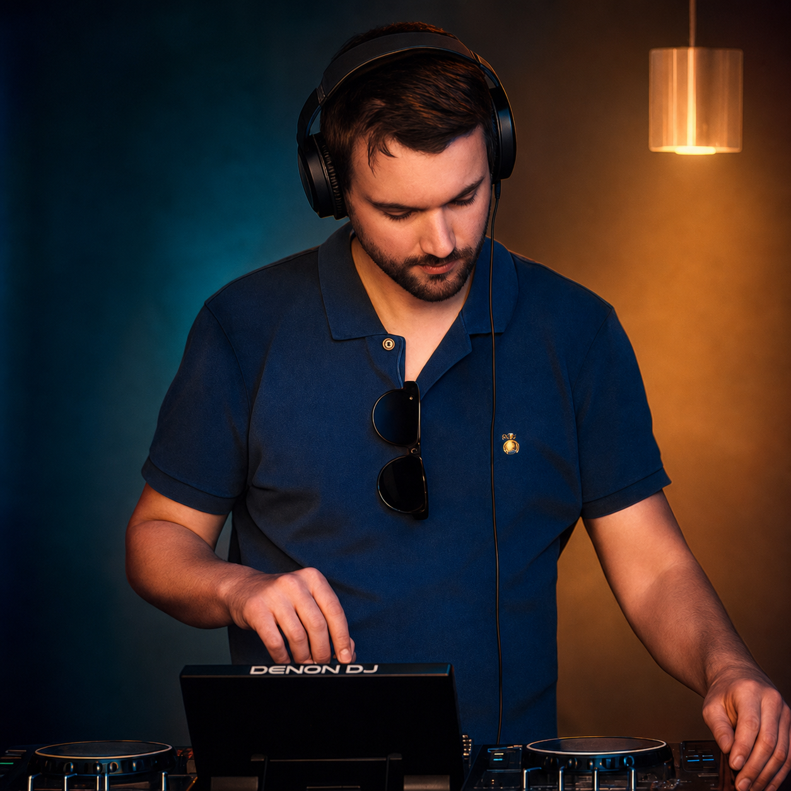
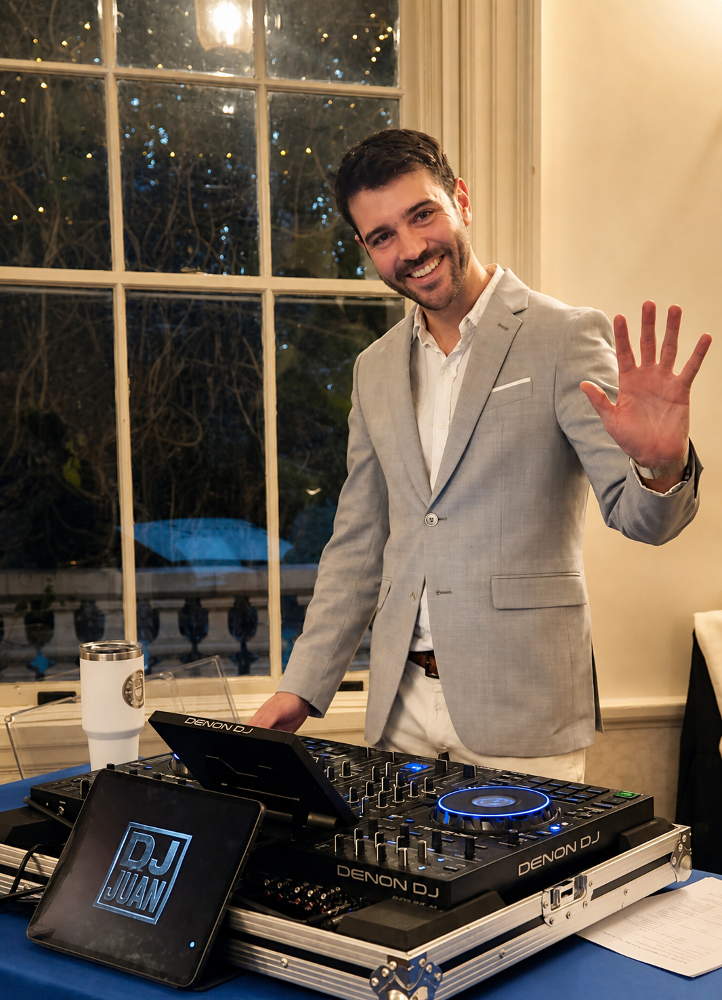
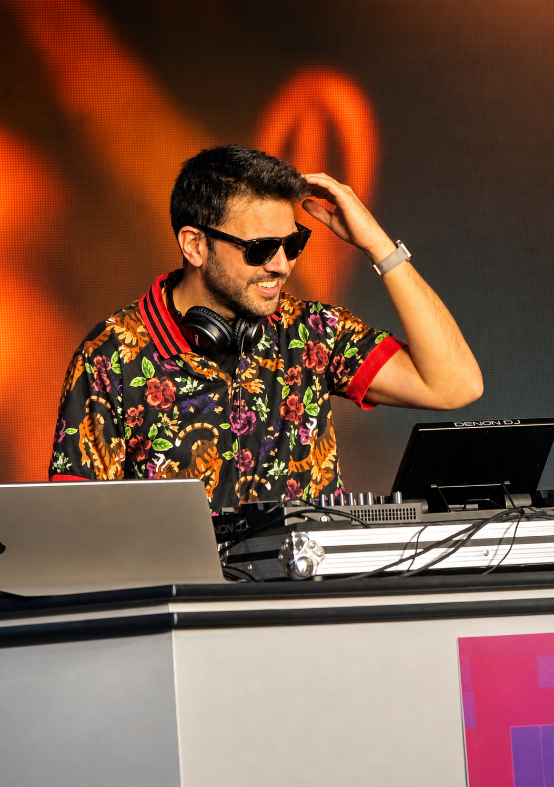
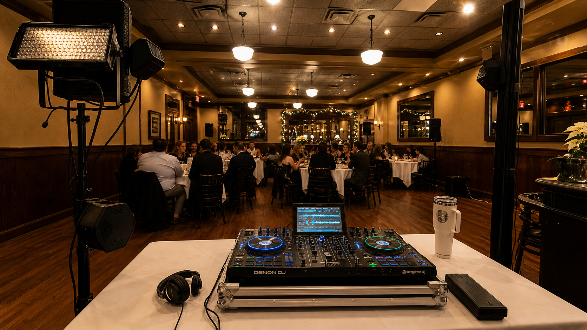
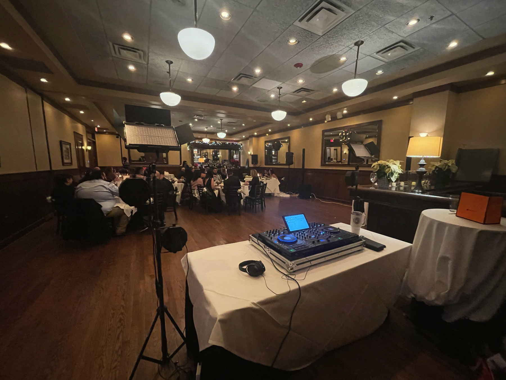
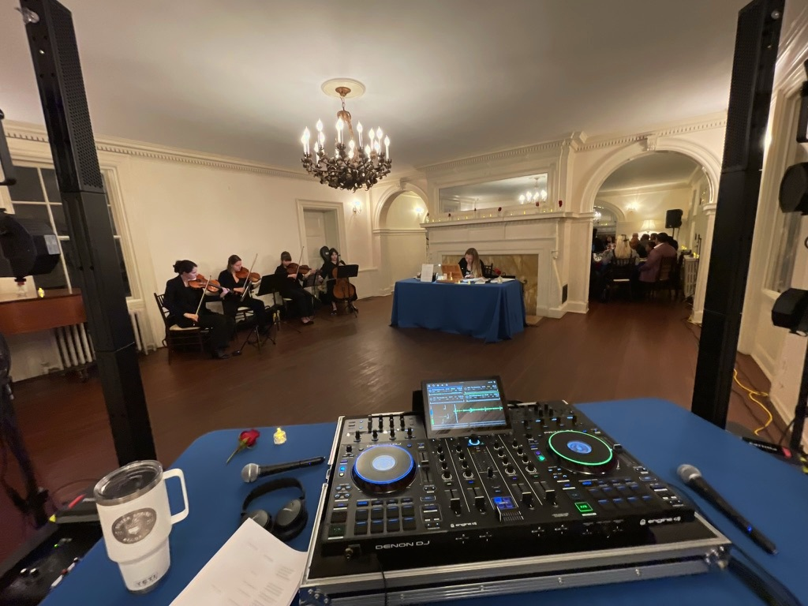
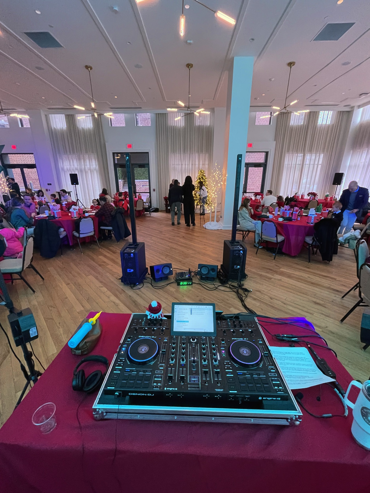
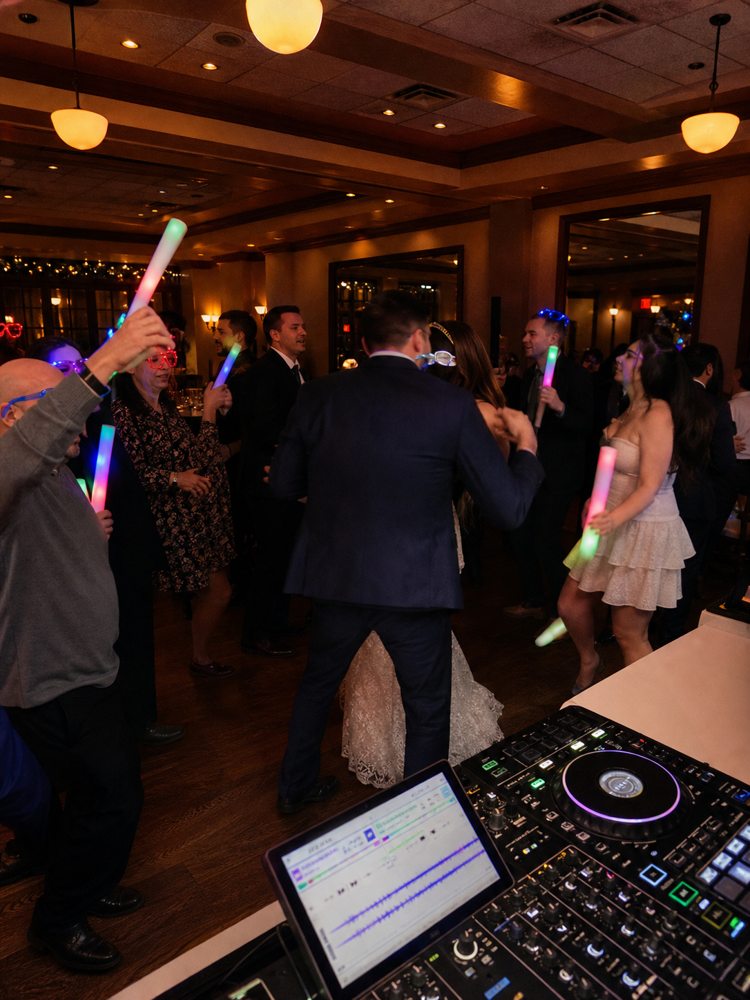

Flujo de boda
Música que acompaña todo el arco del día, desde la llegada de invitados y la cena hasta el pico de la noche.

Con base en Silver Spring. Listo para el DMV.
DJ para bodas y eventos privados con energía cálida, transiciones limpias y pistas de baile que se sienten personales.
Este es el sitio artistico de DJ Juan. Para paquetes, fechas y detalles de eventos, las reservas se manejan por Silver Spring Records.
El sonido
Música que acompaña todo el arco del día, desde la llegada de invitados y la cena hasta el pico de la noche.
Las mezclas se construyen para mantener impulso, no ruido. La meta es que la sala confíe en la próxima canción.
Hits actuales, clásicos, favoritos latinos, música bailable y canciones especiales del cliente pueden convivir en un set fluido.
Electronic Press Kit
DJ Juan es un DJ para bodas y eventos privados con base en Silver Spring y servicio en Maryland, Washington DC y Northern Virginia. Sus sets combinan seleccion open-format, transiciones limpias, fluidez latina y pop, y un enfoque técnico tranquilo que mantiene la energía del evento sin dominar la sala.
Por medio de Silver Spring Records, DJ Juan apoya audio de ceremonia, cóctel, sonido de recepción, iluminación, momentos bilingües de MC y producción para eventos privados. También produce y presenta música original, incluyendo el concepto en vivo The 2080s.

Bodas, cócteles, recepciones, fiestas privadas, eventos corporativos y celebraciones interiores en el DMV.
Sets open-format con hits actuales, clásicos, favoritos latinos, pop, alternativa y canciones imprescindibles del cliente.
Controlador profesional, sonido en vivo, micrófonos, iluminación, flujos con Stream Deck/OBS y montaje flexible.
Headliner de AI Unlocked Festival 2025 con The 2080s, integrando DJ en vivo, voces y visuales generados con IA.
Donde encaja DJ Juan
DJ Juan es la cara personal para clientes que quieren entender al DJ, el gusto musical y la energía antes de reservar. Silver Spring Records sigue siendo la base comercial para paquetes, calendario y producción de eventos.
Trabajo





